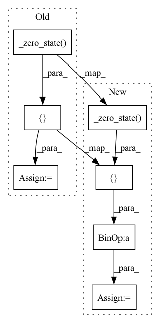

Pattern ID :1092

Before Change
z_list = [self._zero_state(hs)]
for _ in range(1, len(self.lstm)):
c_list += [self._zero_state(hs)]
z_list += [self._zero_state(hs)]
prev_out = hs.new_zeros(1, self.odim)
// initialize attention
After Change
z_list = [self._zero_state(hs)]
for _ in range(1, len(self.lstm)):
c_list = c_list + [self._zero_state(hs)]
z_list = z_list + [self._zero_state(hs)]
prev_out = hs.new_zeros(1, self.odim)
// initialize attention
prev_att_w = None
self.att.reset()
// setup for attention constraint
if use_att_constraint:
last_attended_idx = 0
else:
last_attended_idx = None
// loop for an output sequence
idx = 0
outs, att_ws, probs = [], [], []
while True:
// updated index
idx = idx + self.reduction_factor
// decoder calculation
if self.use_att_extra_inputs:
att_c, att_w = self.att(hs,
ilens,
z_list[0],
prev_att_w,
prev_out,
last_attended_idx=last_attended_idx,
backward_window=backward_window,
forward_window=forward_window, )
else:
att_c, att_w = self.att(hs,
ilens,
z_list[0],
prev_att_w,
last_attended_idx=last_attended_idx,
backward_window=backward_window,
forward_window=forward_window, )
att_ws = att_ws + [att_w]
if self.speaker_embedding_projection_size is not None:
prenet_out = self.prenet(torch.cat([prev_out, speaker_embedding], dim=-1)) if self.prenet is not None else prev_out
else:
prenet_out = self.prenet(prev_out) if self.prenet is not None else prev_out
xs = torch.cat([att_c, prenet_out], dim=1)
z_list[0], c_list[0] = self.lstm[0](xs, (z_list[0], c_list[0]))
for i in range(1, len(self.lstm)):
z_list[i], c_list[i] = self.lstm[i](z_list[i - 1], (z_list[i], c_list[i]))
zcs = (torch.cat([z_list[-1], att_c], dim=1) if self.use_concate else z_list[-1])
outs = outs + [self.feat_out(zcs).view(1, self.odim, -1)] // [(1, odim, r), ...]
probs = probs + [torch.sigmoid(self.prob_out(zcs))[0]] // [(r), ...]
if self.output_activation_fn is not None:
prev_out = self.output_activation_fn(outs[-1][:, :, -1]) // (1, odim)
In pattern: SUPERPATTERN
Frequency: 3
Non-data size: 7
Instances
Fragment ID: 5546196
Project Name: digitalphonetics/ims-toucan
Commit Name: 0c62eba4c06d41f49d35a03b02044c322f6a5448
Time: 2021-10-07
Author: florian.lux@ims.uni-stuttgart.de
File Name: Layers/TacotronDecoder.py
M Class Name: Decoder
N Class Name: Decoder
M Method Name: inference(9)
N Method Name: inference(9)
M Parent Class: torch.nn.Module
N Parent Class: torch.nn.Module
M File Name: Layers/TacotronDecoder.py
N File Name: Layers/TacotronDecoder.py
M Start Line: 477
M End Line: 531
N Start Line: 477
N End Line: 531
'>
Before Change
c_list = [self._zero_state(hs)]
z_list = [self._zero_state(hs)]
for _ in range(1, len(self.lstm)):
c_list += [self._zero_state(hs)]
z_list += [self._zero_state(hs)]
prev_out = hs.new_zeros(hs.size(0), self.odim)
After Change
c_list = [self._zero_state(hs)]
z_list = [self._zero_state(hs)]
for _ in range(1, len(self.lstm)):
c_list = c_list + [self._zero_state(hs)]
z_list = z_list + [self._zero_state(hs)]
prev_out = hs.new_zeros(hs.size(0), self.odim)
'>
Fragment ID: 5546199
Project Name: digitalphonetics/ims-toucan
Commit Name: 0c62eba4c06d41f49d35a03b02044c322f6a5448
Time: 2021-10-07
Author: florian.lux@ims.uni-stuttgart.de
File Name: Layers/TacotronDecoder.py
M Class Name: Decoder
N Class Name: Decoder
M Method Name: forward(5)
N Method Name: forward(5)
M Parent Class: torch.nn.Module
N Parent Class: torch.nn.Module
M File Name: Layers/TacotronDecoder.py
N File Name: Layers/TacotronDecoder.py
M Start Line: 376
M End Line: 405
N Start Line: 376
N End Line: 405
'>
Before Change
c_list = [self._zero_state(hs)]
z_list = [self._zero_state(hs)]
for _ in range(1, len(self.lstm)):
c_list += [self._zero_state(hs)]
z_list += [self._zero_state(hs)]
prev_out = hs.new_zeros(hs.size(0), self.odim)
After Change
c_list = [self._zero_state(hs)]
z_list = [self._zero_state(hs)]
for _ in range(1, len(self.lstm)):
c_list = c_list + [self._zero_state(hs)]
z_list = z_list + [self._zero_state(hs)]
prev_out = hs.new_zeros(hs.size(0), self.odim)
'>
Fragment ID: 5546200
Project Name: digitalphonetics/ims-toucan
Commit Name: 0c62eba4c06d41f49d35a03b02044c322f6a5448
Time: 2021-10-07
Author: florian.lux@ims.uni-stuttgart.de
File Name: Layers/TacotronDecoder.py
M Class Name: Decoder
N Class Name: Decoder
M Method Name: calculate_all_attentions(4)
N Method Name: calculate_all_attentions(4)
M Parent Class: torch.nn.Module
N Parent Class: torch.nn.Module
M File Name: Layers/TacotronDecoder.py
N File Name: Layers/TacotronDecoder.py
M Start Line: 585
M End Line: 603
N Start Line: 585
N End Line: 603